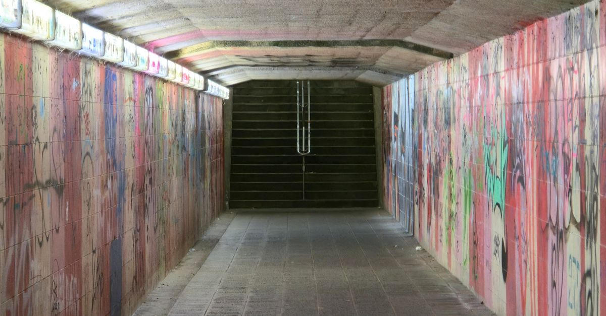
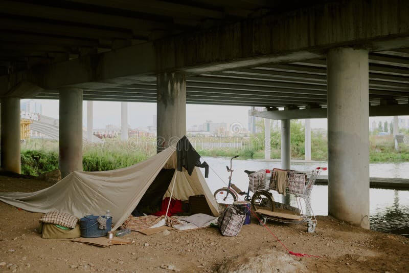

The traditional safety net has collapsed. In its place is a Reddit forum. Over 85,000 people are currently members of a group called r/almosthomeless. They are not exchanging memes. They are trading survival tactics. How to sleep in a stationary car without freezing. How to stretch a week of groceries from a dollar store. How to navigate a multi-year waitlist for disability benefits as eviction looms. While the wealthiest 1% of Americans now sit on an unprecedented $55 trillion in assets, the people holding up the bottom of the economy are a single missed paycheck away from the street. They are not asking for charity. They are just trying to figure out how to survive the month.
That post landed in feeds this week. The numbers check out. Third-party trackers have placed r/almosthomeless between roughly 85,000 and 93,000 members. Growth has been steady. The posts are practical: rationing food, sleeping in a car, navigating shelters that are full, waiting on disability that never arrives, or leaving an abusive situation with nowhere to go. Moderators enforce a hard rule against asking for money or posting crowdfunding links. The exchange is tactics and maps, not donations.

The Ground Under the Tower District
In the High Tower District the same arithmetic appears at street level. A missed shift, a car repair, a medical bill, or a landlord who raises rent can move a household from “almost” to the sidewalk in days. Local shelters report full beds. Disability and housing waitlists stretch for years. Neighbors already organize watch groups, porch Wi-Fi, and $1 water because formal channels move slower than the need.
The contrast with the top of the distribution is not rhetorical. Federal Reserve Distributional Financial Accounts data from the third quarter of 2025 showed the wealthiest 1% holding approximately $55 trillion—near a post-war high share of total household wealth. Subsequent 2026 updates have continued to show extreme concentration, particularly in equities. The bottom half of households holds a negligible fraction of stock wealth by comparison. The people posting on r/almosthomeless are not the ones capturing the market gains.

What the Forum Actually Does
The subreddit description states the premise directly: the ground can give way beneath any of us. Participants share what works in their city—where a car can sit overnight without being towed, which dollar-store staples stretch farthest, which local offices still answer the phone, which shelters have a realistic chance of a bed. It is peer-to-peer infrastructure built in the absence of reliable public capacity. Activity levels reported in coverage earlier in 2026 ran to roughly 14,000 visitors and hundreds of posts per week.
None of this replaces housing, income, or functional disability processing. It is the residual system that appears when those systems do not function at the required speed or scale.
Local Arithmetic
Fresno and the Tower District sit inside the same national pattern. Housing costs, medical debt, and irregular work hours concentrate the risk on the same households that have the least buffer. Community efforts—neighborhood watches, porch resources, direct neighbor-to-neighbor aid—operate in the gap. They do not erase the structural distance between one missed paycheck and the street, nor do they close the gap between the bottom of the distribution and the $55 trillion concentrated at the top.
The people in r/almosthomeless are documenting, in real time, the practical knowledge required to remain housed or to survive the transition when housing fails. That documentation is itself evidence of the scale of the residual population.